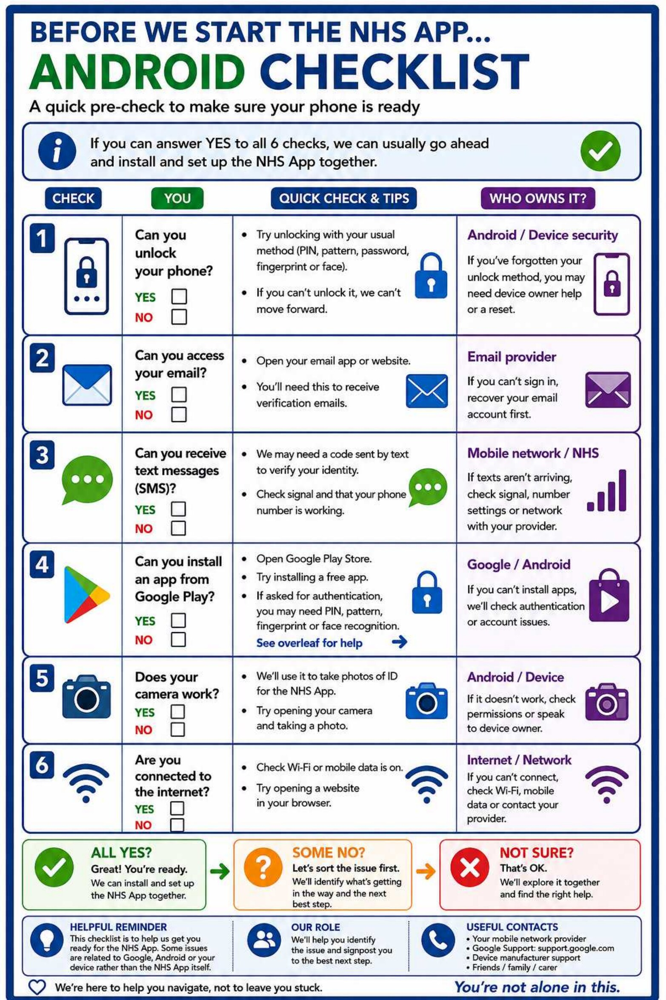
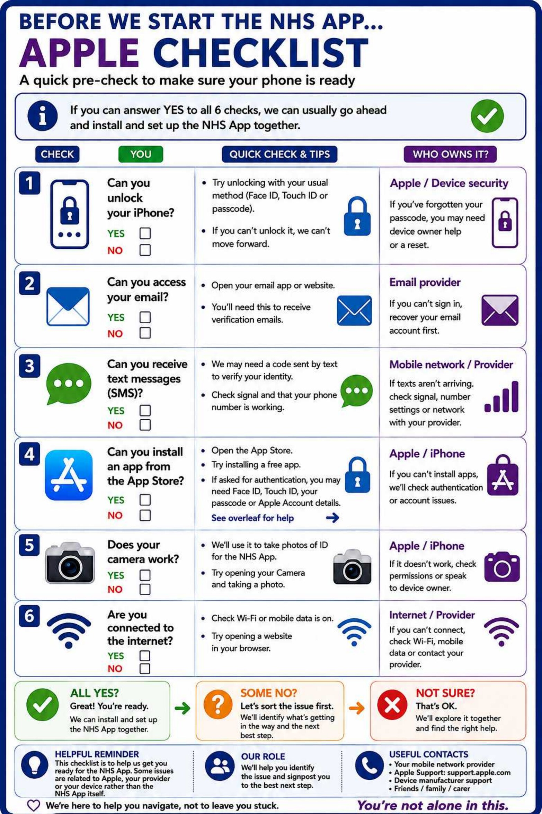

Check whether your phone is ready
These checks help identify whether an ordinary phone, email, text-message, camera or internet issue may block NHS App setup.
Our role: identify the issue and signpost to the responsible source of support. Volunteers do not take ownership of changing security settings, resetting accounts, changing parental controls or diagnosing wider device faults.

Android checklist
- Can you unlock your phone?
- Can you access your email?
- Can you receive text messages?
- Can you install an app from Google Play?
- Does your camera work?
- Are you connected to the internet?

Apple checklist
- Can you unlock your iPhone?
- Can you access your email?
- Can you receive text messages?
- Can you install an app from the App Store?
- Does your camera work?
- Are you connected to the internet?
What happens next?
- All six answers are Yes: you can usually continue with installation and setup.
- One or more answers are No: identify which issue is blocking progress and use the checklist’s “Who owns it?” guidance.
- You are not sure: explore the check together without changing security or account settings on the person’s behalf.